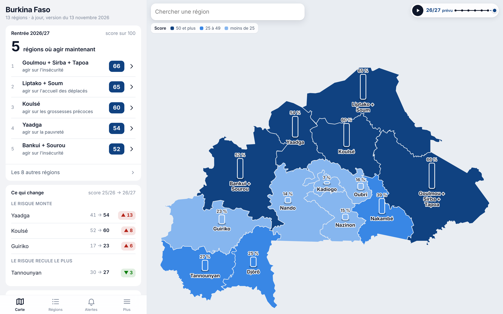
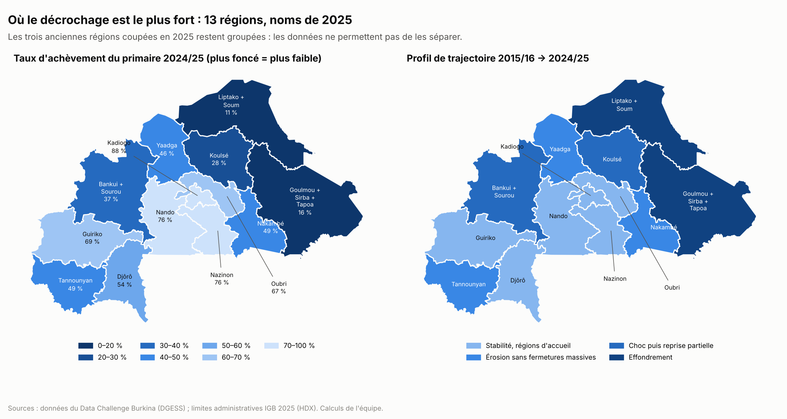
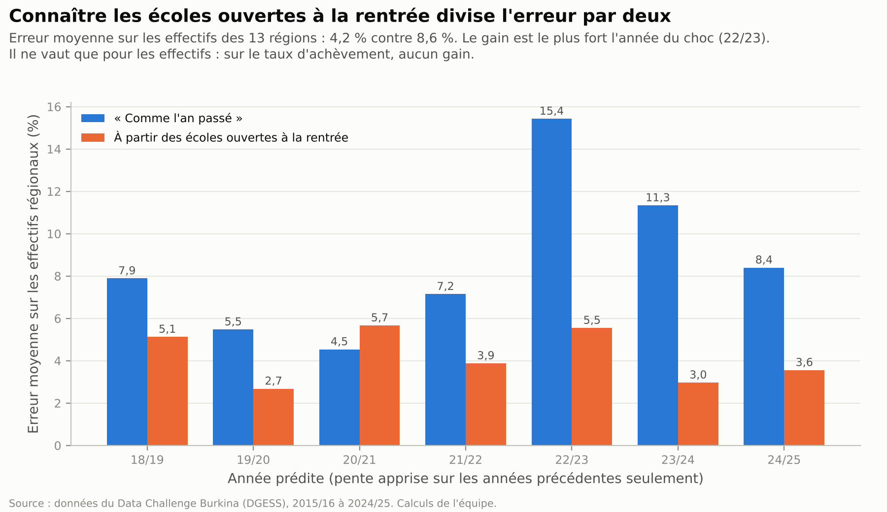
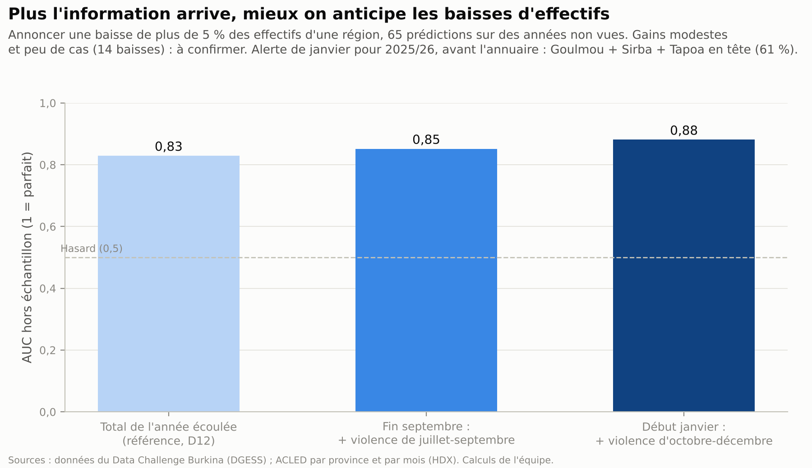
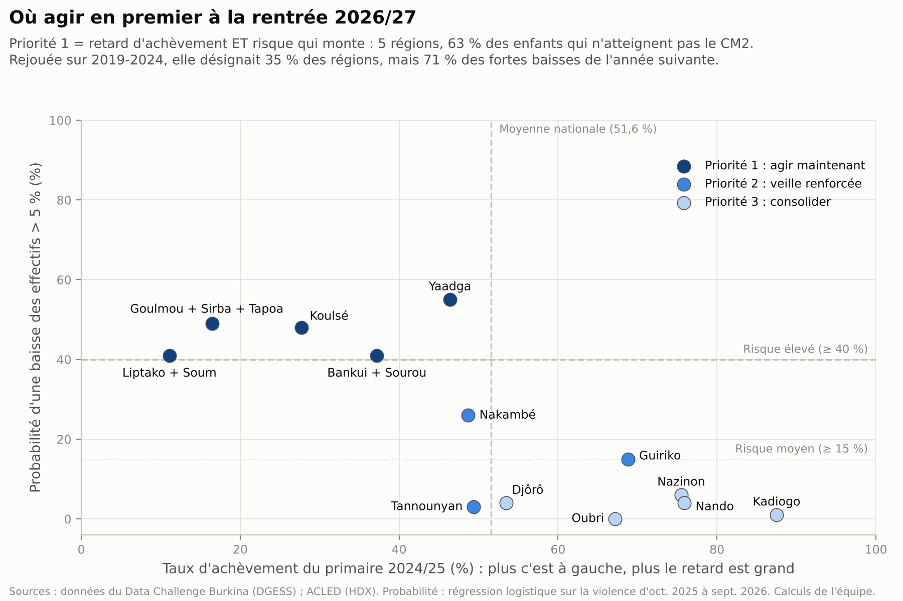
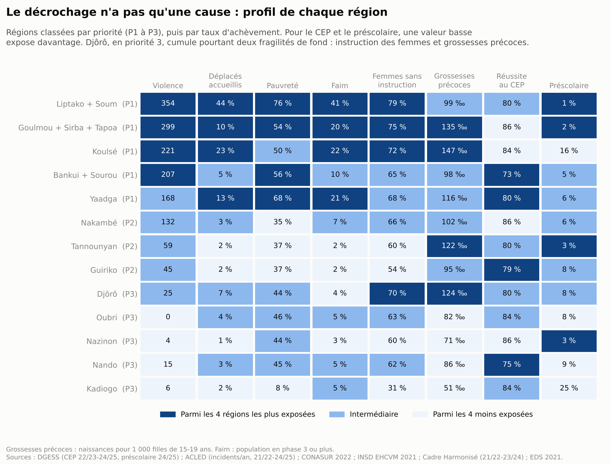
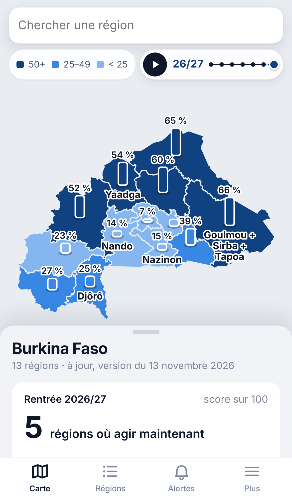
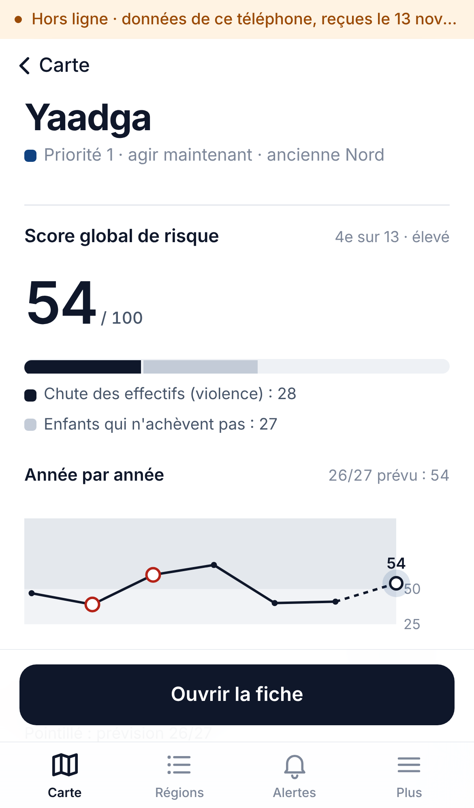
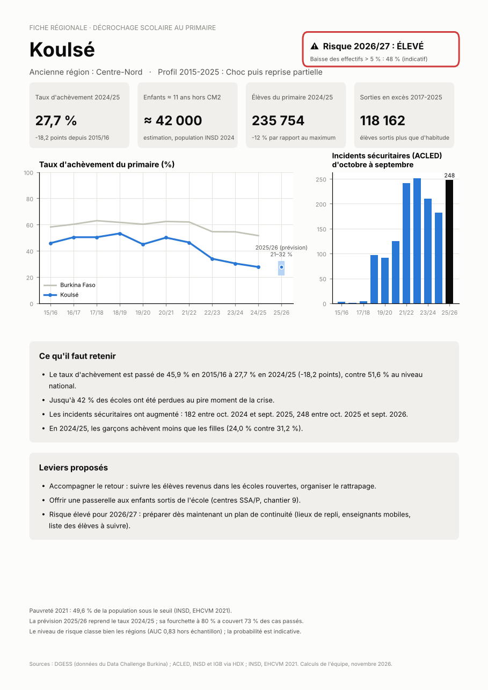

Une carte du risque pour la rentrée 2026/27, une alerte qui se précise au fil de l'année, un levier par région, et un outil qui fonctionne sans réseau.

Un décideur ne demande pas « de combien de points le taux d'achèvement va-t-il bouger ». Avant chaque rentrée, quand se décident les réouvertures, les cantines et les affectations d'enseignants, il demande :
Les outils existants arrivent trop tard ou voient mal. Le taux d'abandon par cohorte n'est connu qu'après la rentrée suivante, et il compte comme abandons les élèves déplacés réinscrits ailleurs. Le suivi de l'éducation en urgence compte les écoles fermées (5 336 en février 2024), mais pas les élèves qui manquent encore. Les systèmes d'alerte élève par élève supposent un identifiant unique, encore en phase pilote au Burkina.
21 tableaux de la DGESS, de 2015/16 à 2024/25, sur les 13 anciennes régions : effectifs, écoles, nouveaux inscrits, taux de scolarisation, d'admission, d'achèvement, réussite au CEP, par sexe. Il n'y a ni redoublants, ni abandons, ni provinces, ni effectifs par niveau et par région. Le décrochage se mesure donc par deux signaux observables : la chute des effectifs d'une année sur l'autre et le taux d'achèvement.
Contrôles de cohérence (8 contrôles) : toutes les sommes concordent (garçons + filles, régions = national, statuts, niveaux). Deux anomalies sont signalées et traitées : une ligne recopiée au préscolaire 2019/20, et des taux au-dessus de 100 % dans les régions d'accueil, où les projections de population ignorent les déplacements. Les effectifs bruts sont plus fiables que les taux.
| Source | Ce qu'elle apporte | Dans le dépôt |
|---|---|---|
| ACLED (via HDX) | Incidents de violence par province et par mois, 1997 à 2026 | agrégat par région et année (brut non redistribuable) |
| IGB, via OCHA | Limites administratives 2025 : correspondance 13 / 17 régions et 45 / 47 provinces | table et carte des 13 régions |
| INSD (cod-ps) | Population 2024 par province | brut |
| Cadre harmonisé | Population en phase 3 ou plus d'insécurité alimentaire | brut et agrégat |
| EDS 2021 | Femmes sans instruction, grossesses précoces | valeurs régionales |
| INSD, EHCVM 2021 | Pauvreté par région | tableau recopié |
| CONASUR | Personnes déplacées accueillies, fin 2022 | brut et agrégat |
| Insecurity Insight | Attaques contre l'éducation | agrégat par région et année |
13 ou 17 régions ? Le découpage de 2025 compte 17 régions, mais les données du challenge n'en connaissent que 13. Le travail se fait sur les 13 anciennes régions, affichées sous leur nom de 2025 (par exemple « Goulmou + Sirba + Tapoa » pour l'ancien Est), grâce à la correspondance officielle de l'IGB. Une région coupée en 2025 garde un seul score : les données ne permettent pas de séparer ses parties, et l'outil le dit.
Le choc de 2022/23. Les effectifs du primaire passent de 3 174 946 à 2 835 544 (−10,7 %), les écoles de 14 427 à 12 780.
L'entrée repart, l'achèvement s'effondre. En 2024/25, les effectifs battent un record (3 308 096), mais l'achèvement tombe à 51,6 %, son plus bas de la décennie. Les garçons achèvent moins que les filles (47,7 %).
Les écoles fermées expliquent l'essentiel des variations d'effectifs : 1 % d'écoles en moins va avec 0,78 % d'élèves en moins (R² = 0,87, 117 variations).
Cinq régions décrochent nettement : l'Est (achèvement de 40,2 % à 16,5 %), le Sahel (11,1 %), le Centre-Nord, la Boucle du Mouhoun et le Nord. Le Centre, les Hauts-Bassins, le Centre-Ouest et le Centre-Sud tiennent : ce sont des régions d'accueil.
Le retard est très persistant : la corrélation de rang de l'achèvement d'une année à l'autre vaut 0,97. La carte de cette année désigne de façon fiable les régions de l'an prochain.

Une seule règle de conduite : chaque modèle est testé sur des années qu'il n'a pas vues, contre la règle la plus simple, « comme l'an passé », et la liste des modèles est fixée avant de lancer les tests.
On prévoit, pour chaque région, la probabilité que les élèves du primaire baissent de plus de 5 % à la rentrée suivante, à partir d'une seule source : les incidents de violence de l'année scolaire qui se termine (octobre à septembre). C'est une régression logistique :
Comment elle a appris. 104 cas (13 régions × 8 années, 2016/17 à 2023/24), dont 19 fortes baisses. Les trois nombres sont ceux qui séparent le mieux les années de chute des autres. Exemple, Yaadga : 250 incidents contre 131 l'année d'avant, donc z = −5,77 + 0,98 × 5,53 + 0,86 × 0,64 = 0,21, et p = 55 %.
Comment on l'a vérifiée. Le passé est rejoué année par année : pour prévoir 2019/20, le modèle n'apprend que sur les années d'avant, et ainsi de suite. Sur ces années jamais vues :
| Modèle (forte baisse l'an prochain) | AUC | Baisses annoncées |
|---|---|---|
| Logistique, violence seule (retenu) | 0,83 | 64 % |
| Forêt aléatoire, toutes variables | 0,78 | 64 % |
| Logistique, toutes variables | 0,75 | 57 % |
| Règle d'escalade simple | 0,68 | 50 % |
| Aucun modèle (hasard) | 0,50 | — |
AUC : sur une paire « une région qui chute, une qui ne chute pas », part des cas où le modèle donne le risque le plus haut à la bonne région. Les probabilités classent bien mais restent approximatives (Brier 0,166 contre 0,169 pour le taux de base) : on lit des niveaux (élevé à partir de 40 %, moyen à partir de 15 %), pas des pourcentages exacts.
ACLED donne la violence par mois. Six signaux plus fins ont été testés ; deux gagnent, et tous deux portent sur le moment de la violence, pas sur sa quantité :
| Quand | Ce qu'on ajoute | AUC |
|---|---|---|
| Avant la rentrée | violence de l'année et son escalade | 0,83 |
| Fin septembre | + violence de juillet à septembre | 0,85 |
| Début janvier | + violence d'octobre à décembre, pendant la rentrée | 0,88 |
Écartés : part du territoire touchée (0,79), violence des régions voisines (0,81), attaques contre l'éducation, qui annoncent moins bien les fermetures que l'ensemble des incidents.
Exemple, Yaadga : p = 0,55 et TAP = 46,4 %, donc score = 50 × 0,55 + 50 × 0,536 = 54.
27,5 points viennent de la chute probable, 26,8 des enfants qui n'achèvent pas.
Extrêmes : Goulmou + Sirba + Tapoa 66 (49 % de risque, 16,5 % d'achèvement) ; Kadiogo 7 (1 % et 87,5 %).
| Rejoué 2019/20-2023/24 | AUC | Baisses | Élèves perdus |
|---|---|---|---|
| Score global | 0,80 | 64 % | 65 % |
| Risque seul | 0,83 | 64 % | 65 % |
| Matrice, priorité 1 | — | 71 % | 69 % |
À nombre de régions égal. Le score résume, il ne cible pas mieux : il est affiché comme lecture d'ensemble, et la matrice de priorité reste la règle pour cibler.
| Priorité | Règle |
|---|---|
| 1 · agir maintenant | achèvement sous la moyenne du pays (51,6 %) et risque élevé (p ≥ 40 %) |
| 2 · veille renforcée | achèvement sous la moyenne ou risque au moins moyen (p ≥ 15 %) |
| 3 · consolider | les autres régions |
Rejouée sur le passé avec la seule information de chaque année, la priorité 1 désignait 35 % des régions mais contenait 71 % des fortes baisses de l'année suivante et 69 % des élèves perdus. Aucune forte baisse n'est tombée en priorité 3.
Pour chaque facteur de fond, on mesure l'écart de la région à la moyenne des 13 (en écarts-types, orienté pour qu'une valeur positive signifie « plus exposé »), pondéré par la force du lien du facteur avec l'achèvement :
| Facteur | Violence | Femmes sans instruction | Déplacés accueillis | Faim | Grossesses précoces | Pauvreté | Préscolaire |
|---|---|---|---|---|---|---|---|
| Poids | 0,92 | 0,85 | 0,83 | 0,72 | 0,72 | 0,69 | 0,55 |
Le facteur au plus grand poids est le facteur dominant, et son levier est proposé ; le deuxième donne la suite. Le CEP est écarté (effet de sélection). Ce facteur explique et oriente l'action, il ne prévoit pas : ajoutés au modèle de risque, la faim et les facteurs de fond font baisser l'alerte (AUC 0,76 contre 0,82).
Prévoir les effectifs à l'aveugle ne marche pas : toutes les approches testées font moins bien que « comme l'an passé », car elles ratent les réouvertures, qui sont des décisions de l'État. Dès que le nombre d'écoles ouvertes à la rentrée est connu, l'erreur est divisée par deux (4,2 % contre 8,6 %) :
Le tableau de bord permet de saisir ce nombre sur le terrain, même sans réseau, et affiche aussitôt les élèves attendus.


| Région (nom 2025) | Score | Risque de chute | Achèvement 24/25 | Priorité | Sur quoi agir | Enfants hors CM2 |
|---|---|---|---|---|---|---|
| Goulmou + Sirba + Tapoa ancienne Est | 66 | 49 % | 16,5 % | 1 · agir maintenant | Agir sur l'insécurité | 50 600 |
| Liptako + Soum ancienne Sahel | 65 | 41 % | 11,1 % | 1 · agir maintenant | Agir sur l'accueil des déplacés | 28 200 |
| Koulsé ancienne Centre-Nord | 60 | 48 % | 27,7 % | 1 · agir maintenant | Agir sur les grossesses précoces | 42 000 |
| Yaadga ancienne Nord | 54 | 55 % | 46,4 % | 1 · agir maintenant | Agir sur la pauvreté | 28 600 |
| Bankui + Sourou ancienne Boucle du Mouhoun | 52 | 41 % | 37,2 % | 1 · agir maintenant | Agir sur l'insécurité | 35 300 |
| Nakambé ancienne Centre-Est | 39 | 26 % | 48,7 % | 2 · veille renforcée | Agir sur l'insécurité | 25 100 |
| Tannounyan ancienne Cascades | 27 | 3 % | 49,4 % | 2 · veille renforcée | Agir sur les grossesses précoces | 12 800 |
| Guiriko ancienne Hauts-Bassins | 23 | 15 % | 68,8 % | 2 · veille renforcée | Rien ne ressort : consolider | 20 400 |
| Djôrô ancienne Sud-Ouest | 25 | 4 % | 53,5 % | 3 · consolider | Agir sur les grossesses précoces | 11 800 |
| Oubri ancienne Plateau Central | 16 | 0 % | 67,2 % | 3 · consolider | Rien ne ressort : consolider | 9 500 |
| Nazinon ancienne Centre-Sud | 15 | 6 % | 75,5 % | 3 · consolider | Agir sur le préscolaire | 5 500 |
| Nando ancienne Centre-Ouest | 14 | 4 % | 75,9 % | 3 · consolider | Rien ne ressort : consolider | 11 900 |
| Kadiogo ancienne Centre | 7 | 1 % | 87,5 % | 3 · consolider | Rien ne ressort : consolider | 9 900 |
Enfants hors CM2 : enfants d'environ 11 ans qui n'atteignent pas le CM2, estimés à partir de la population 2024 ; ordre de grandeur.


L'application s'ouvre sur un téléphone comme sur un ordinateur. L'accueil est la carte du score ; un lecteur discret fait défiler les années de 2020/21 à la prévision 2026/27. Toucher une région ouvre sa page : le score et sa décomposition, la courbe du score année par année jusqu'à la prévision (avec les chutes réellement observées), le facteur dominant et son levier, l'achèvement, la violence, et la fiche imprimable.


Next.js, base PostgreSQL pour la publication des versions et la réception des saisies, stockage local sur l'appareil (IndexedDB) et service worker. Les chiffres affichés viennent d'un seul fichier produit par l'analyse : l'application, les fiches et ce rapport ne peuvent pas se contredire.
Une page par région, pour un directeur régional, dans le même ordre que l'application : le score et son rang, sur quoi agir, le score année par année jusqu'à la prévision, l'achèvement, la violence et les leviers. Le livret des 13 fiches est classé de la région la plus urgente à la moins urgente.

Tout se relance. Le code de chaque étape est dans un cahier Jupyter déjà exécuté (nettoyage, transformation, analyse descriptive, modèles, interprétation). Relancés, les cahiers redonnent exactement les mêmes résultats. Chaque modèle a été testé sur des années non vues, avec une liste de modèles fixée avant de lancer ; les 21 décisions de méthode sont consignées dans un journal, avec ce qu'elles écartent.
Aucune donnée personnelle. Seules des données agrégées par région et par année sont utilisées. Les données brutes d'ACLED ne sont pas redistribuées, conformément à leurs conditions ; seul notre agrégat est déposé.